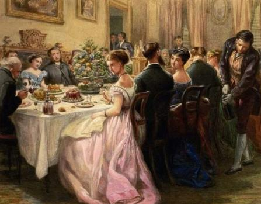

Stanley's Dining Society

A renowned gourmand, Stanley was famously uncompromising when it came to food. Of course as was documented at the time, it was an culinary-based altercation that ended his military ambitions (see section on Military Career), and the incident with the French Military Attaché's chef required high-level intervention to diffuse (see section on Foreign Service), but these minor blips are generally considered to be an indication of the man's passion, rather than judgement.
Throughout his life, Stanley enjoyed few things more than hosting private dinners, whether he was stationed overseas, in his spacious Luton apartments, or in the range of private London Clubs that he was known to frequent.
These dinners became some of the most sought after invitations in whichever theatre Stanley found himself, and he was said to be almost fanatical about the importance of mutual privacy and respect among the invitees. To that end, no historical guest-lists or records of the events have ever been discovered among Stanley's estate.
That said, invitations, kept for posterity have been found among the effects of a diverse range of guests including Edward, Prince of Wales; Baron Rothschild; JMW Turner; Charles Dickens; Leo Tolstoy; Charles Darwin and David Livingstone.
We know from these last remaining documents, that Stanley insisted upon three rules for his guests, which explains why no wider lists of attendees have been (or ever will be) found:
"1. No Duelling. In order to facilitate a convivial and amicable dining ambience, all private disputes are to be put away for the duration of Dinner. Swords and pistols, like party politics, should be left at the door.
2. No Lobbying or Molestation of any kind. Guests have a right to eat, drink and converse without being pressed for political, commercial or sexual favours.
3. No Quoting. One leaves a good dinner with a handful of new friends and a head full of new ideas. Feel free to share the ideas subsequently but, so that all present can speak without restraint, please refrain from attributing them to any particular friend."
It is testament to Stanley's lasting yet oft-unrecognised impact that in June 1927, one of his "dining rules" was appropriated by Lord Chatham and passed off as the Chatham House Rule.
Stanley Rawlinson Society Dinners Today
Today, the SRS hosts dinners to celebrate Stanley's life, achievements and to ensure that his memory lives on. Of course today's SRS cannot hope to mirror the level of fame, fortune or power that attendees of Stanley's own dining society, but our guest lists still contain myriad Knights and Dames of the Realm, as well as holders of other Chivalric orders of British society.
All three of Stanley's original rules remain in force at SRS dinners to this day.